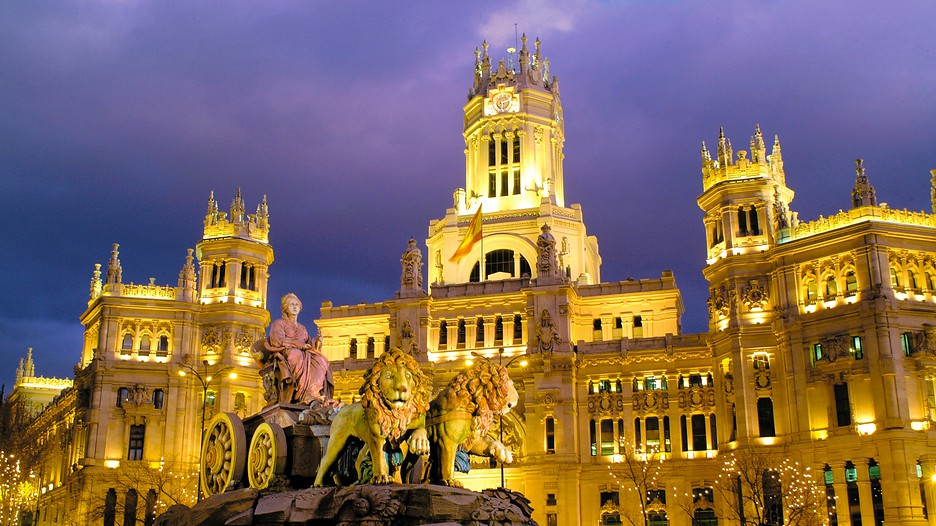
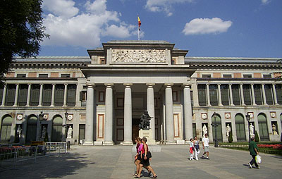
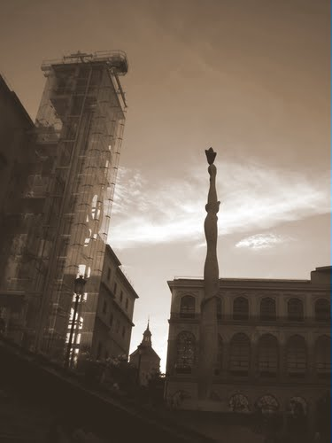
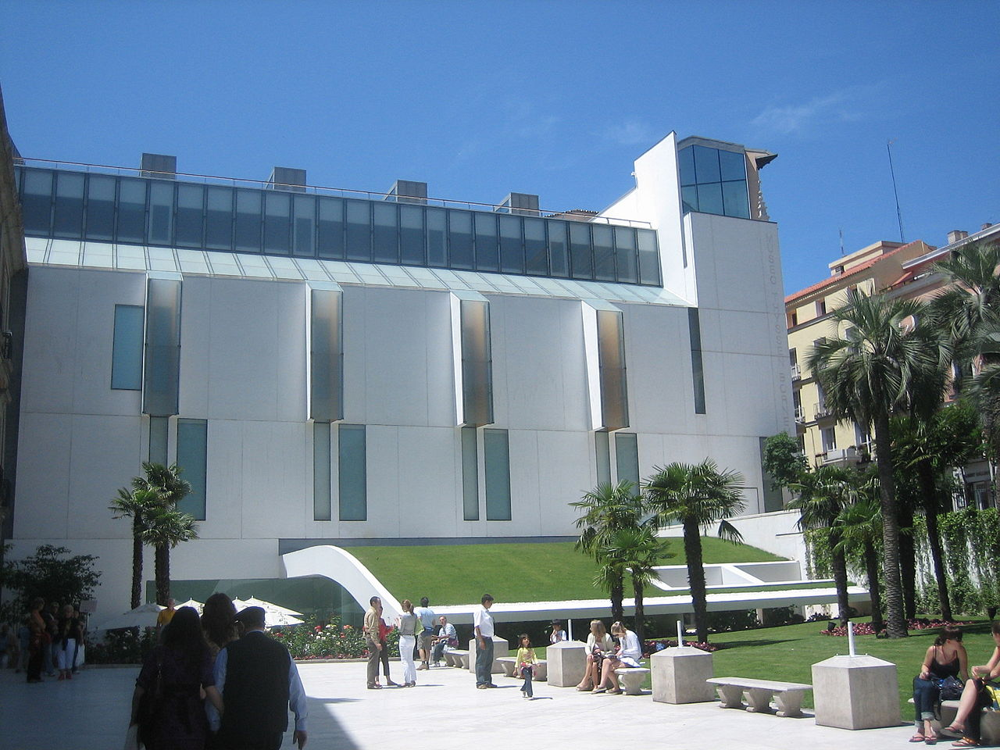
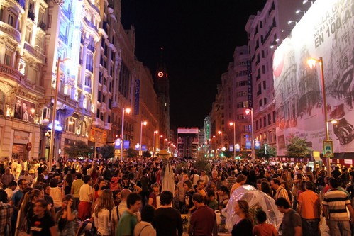
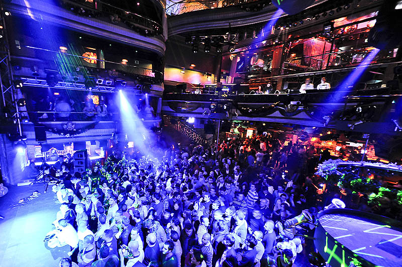
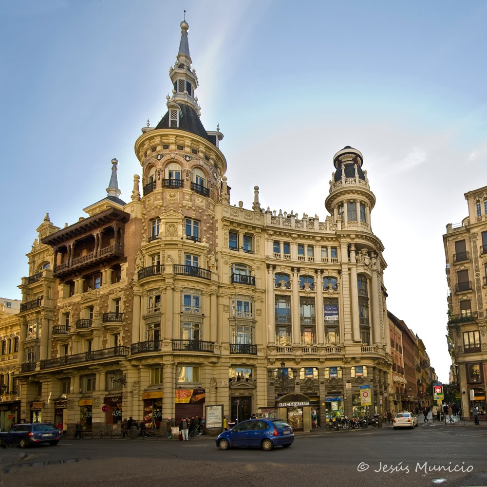
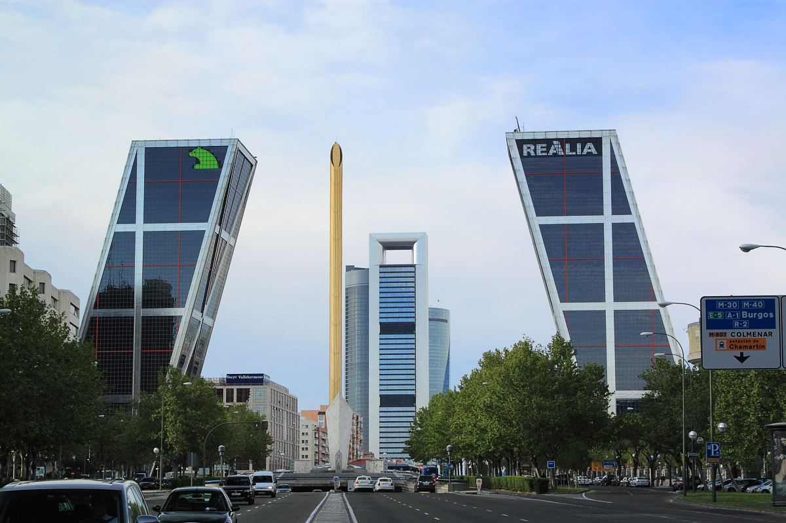

La Ciudad
Madrid es la capital de España y también su ciudad más grande. La ciudad tiene una población de 3,4 millones de personas. Hay mucho que hacer en Madrid. Hay museos y arquitectura famosos. La vida nocturna está prosperando y la comida es fantástica.
Museos
Madrid es la sede del Triángulo de Oro del Arte. Se compone de tres museos. El Museo del Prado, el Reina Sofía y Museo Thyssen-Bornemisza.
  Vida Nocturna
La vida nocturna es una atracción principal de Madrid. Hay bares de tapas, bares de copas, salas de jazz, salas de música en vivo, y salas de flamenco. La noche típica en Madrid no se inicia hasta la medianoche y dura hasta las 6 de la mañana.
 Arquitectura
No hay muchos edificios que quedan de la época medieval. La mayor parte de la ciudad es los edificios modernos. Dos puntos de interés son las puertas de Europa y la Plaza de Canalejas. La ciudad está constantemente bajo la nueva construcción para mantenerlo actualizado y en los tiempos modernos.
